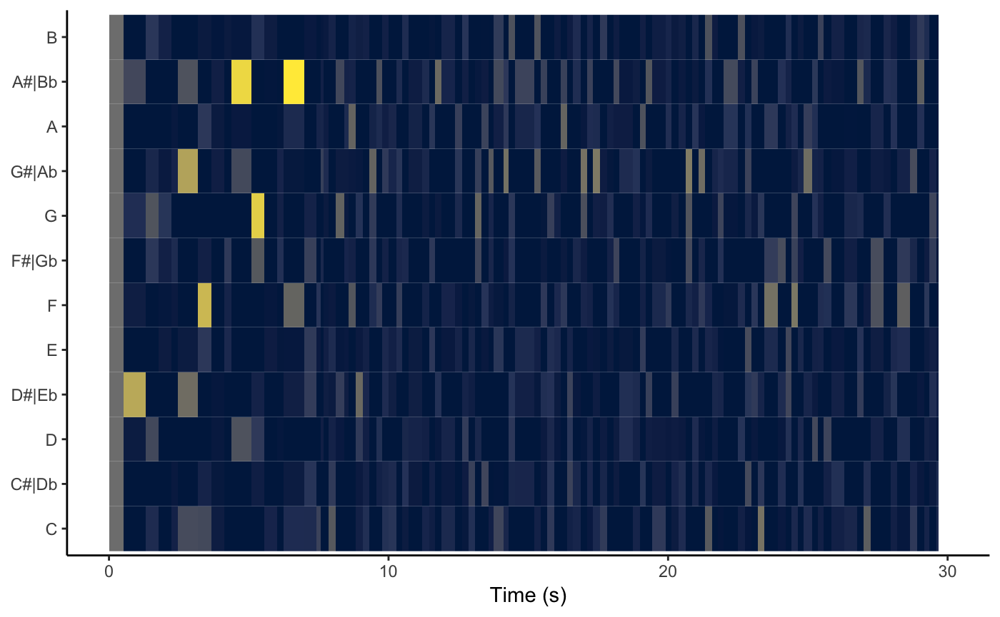
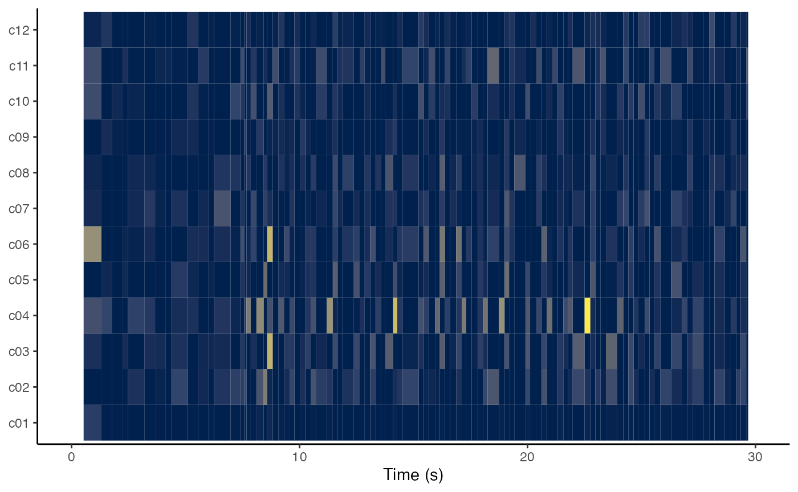
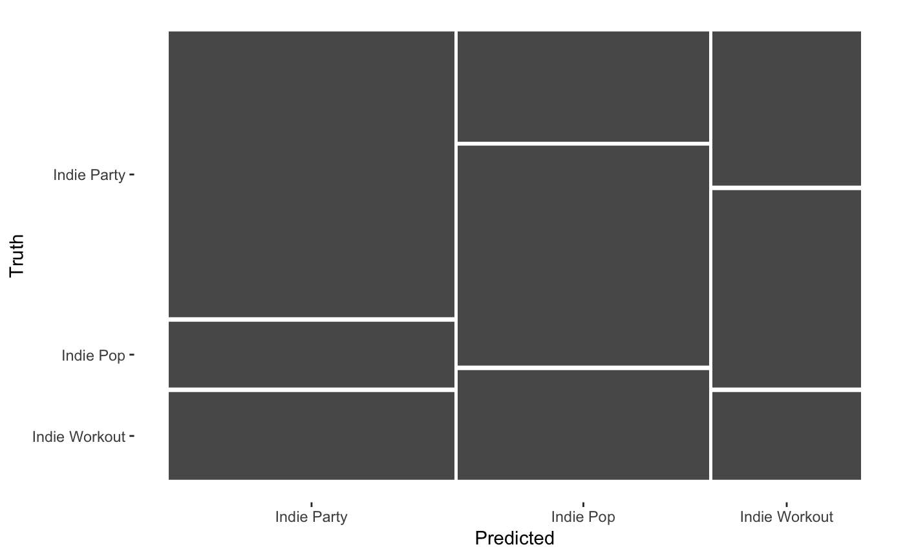
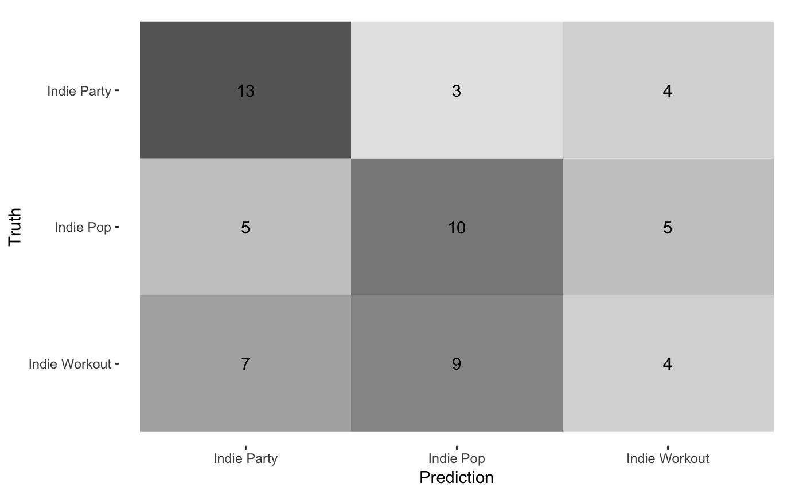
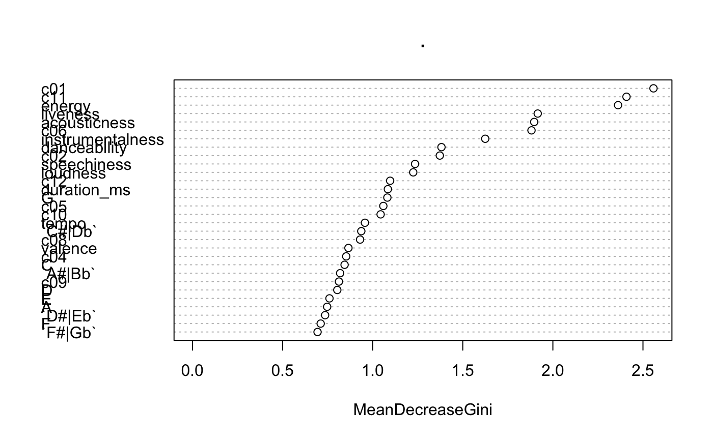
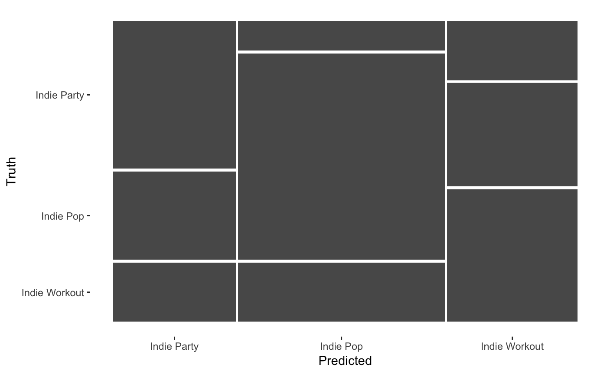
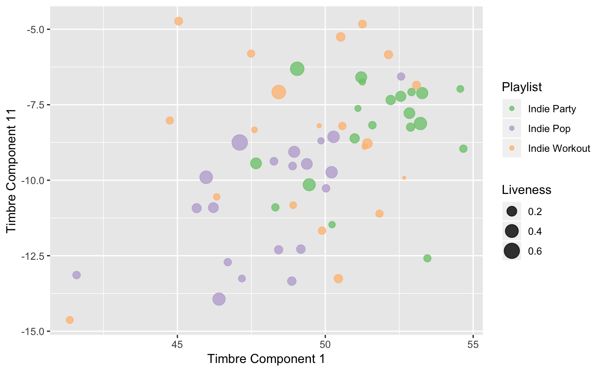

compmus-w11.RmdBe sure to update your installation of compmus before running this vignette.
We will be using the developing tidymodels framework for integrating with the different machine-learning libraries in a consistent manner.
## ── Attaching packages ─────────────────────────────────────────────────────────────────────────────────────── tidyverse 1.2.1 ──## ✔ ggplot2 3.1.0 ✔ purrr 0.3.2
## ✔ tibble 2.1.1 ✔ dplyr 0.8.0.1
## ✔ tidyr 0.8.3 ✔ stringr 1.4.0
## ✔ readr 1.3.1 ✔ forcats 0.4.0## ── Conflicts ────────────────────────────────────────────────────────────────────────────────────────── tidyverse_conflicts() ──
## ✖ dplyr::filter() masks stats::filter()
## ✖ dplyr::lag() masks stats::lag()## ── Attaching packages ────────────────────────────────────────────────────────────────────────────────────── tidymodels 0.0.2 ──## ✔ broom 0.5.1 ✔ recipes 0.1.4
## ✔ dials 0.0.2 ✔ rsample 0.0.4
## ✔ infer 0.4.0 ✔ yardstick 0.0.3
## ✔ parsnip 0.0.1## ── Conflicts ───────────────────────────────────────────────────────────────────────────────────────── tidymodels_conflicts() ──
## ✖ scales::discard() masks purrr::discard()
## ✖ dplyr::filter() masks stats::filter()
## ✖ recipes::fixed() masks stringr::fixed()
## ✖ dplyr::lag() masks stats::lag()
## ✖ yardstick::spec() masks readr::spec()
## ✖ recipes::step() masks stats::step()##
## Attaching package: 'compmus'## The following object is masked from 'package:spotifyr':
##
## get_playlist_audio_featuresIn order for the code below to run, it is also necessary to set up Spotify login credentials for spotifyr.
For novelty functions, we want to work directly with the segments, and not summarise them at higher levels like Spotify’s own estimates of bar or beat.
pata_pata <-
get_tidy_audio_analysis('3uy90vHHATPjtdilshDQDt') %>%
select(segments) %>% unnest(segments)We can compute an energy-based novelty function based on Spotify’s loudness estimates. The tempo of this piece is about 126 BPM: how well does this technique work?
pata_pata %>%
mutate(loudness_max_time = start + loudness_max_time) %>%
arrange(loudness_max_time) %>%
mutate(delta_loudness = loudness_max - lag(loudness_max)) %>%
ggplot(aes(x = loudness_max_time, y = pmax(0, delta_loudness))) +
geom_line() +
xlim(0, 30) +
theme_minimal() +
labs(x = 'Time (s)', y = 'Novelty')## Warning: Removed 576 rows containing missing values (geom_path).
Because Spotify’s segments are unevenly spaced in time, there is no straightforward way to convert this representation into a tempogram.
We can use similar approaches for chromagrams and cepstrograms. In the case of chromagrams, Aitchison’s clr transformation gives more sensible differences between time points. Even with these helpful transformations, however, self-similarity matrices tend to be more helpful visualisations of chroma and timbre from the Spotify API.
pata_pata %>%
mutate(pitches = map(pitches, compmus_normalise, 'clr')) %>%
arrange(start) %>%
mutate(pitches = map2(pitches, lag(pitches), `-`)) %>%
compmus_gather_chroma %>%
ggplot(
aes(
x = start + duration / 2,
width = duration,
y = pitch_class,
fill = pmax(0, value))) +
geom_tile() +
scale_fill_viridis_c(option = 'E', guide = 'none') +
xlim(0, 30) +
labs(x = 'Time (s)', y = NULL, fill = 'Magnitude') +
theme_classic()## Warning: Removed 6900 rows containing missing values (geom_tile).
pata_pata %>%
arrange(start) %>%
mutate(timbre = map2(timbre, lag(timbre), `-`)) %>%
compmus_gather_timbre %>%
ggplot(
aes(
x = start + duration / 2,
width = duration,
y = basis,
fill = pmax(0, value))) +
geom_tile() +
scale_fill_viridis_c(option = 'E', guide = 'none') +
xlim(0, 30) +
labs(x = 'Time (s)', y = NULL, fill = 'Magnitude') +
theme_classic()## Warning: Removed 6900 rows containing missing values (geom_tile).
Find a Spotify track that has a regular tempo but lacks percussion (e.g., much Western classical music), and compute the above three representations. How do they differ from what you see for ‘Pata Pata’?
In order to demonstrate some of the principles of classification, we will try to identify some of the features that Spotify uses to designate playlists as ‘workout’ playlists. For a full analysis, we would need to delve deeper, but let’s start with a comparison of three playlists: Indie Pop, Indie Party, and Indie Workout. For speed, this example will work with only the first 20 songs from each playlist, but you should feel free to use more if your computer can handle it.
pop <-
get_playlist_audio_features('spotify', '37i9dQZF1DWWEcRhUVtL8n') %>%
slice(1:20) %>%
add_audio_analysis
party <-
get_playlist_audio_features('spotify', '37i9dQZF1DWTujiC7wfofZ') %>%
slice(1:20) %>%
add_audio_analysis
workout <-
get_playlist_audio_features('spotify', '37i9dQZF1DXaRL7xbcDl7X') %>%
slice(1:20) %>%
add_audio_analysisAs you think about this lab session – and your portfolio – think about the four kinds of validity that Sturm and Wiggins discussed in our reading for this week. Do these projects have:
We bind the three playlists together using the trick from Week 7, transpose the chroma vectors to a common tonic using the compmus_c_transpose function, and then summarise the vectors like we did when generating chromagrams and cepstrograms. Again, Aitchison’s clr transformation can help with chroma.
indie <-
pop %>% mutate(playlist = "Indie Pop") %>%
bind_rows(
party %>% mutate(playlist = "Indie Party"),
workout %>% mutate(playlist = "Indie Workout")) %>%
mutate(playlist = factor(playlist)) %>%
mutate(
segments =
map2(segments, key, compmus_c_transpose)) %>%
mutate(
pitches =
map(segments,
compmus_summarise, pitches,
method = 'mean', norm = 'manhattan'),
timbre =
map(
segments,
compmus_summarise, timbre,
method = 'mean')) %>%
mutate(pitches = map(pitches, compmus_normalise, 'clr')) %>%
mutate_at(vars(pitches, timbre), map, bind_rows) %>%
unnest(pitches, timbre)In the tidyverse approach, we can preprocess data with a recipe specifying what we are predicting and what variables we think might be useful for that prediction. Then we use step functions to do any data clean (usually centering and scaling, but step_range is a viable alternative that squeezes everything to be between 0 and 1). Finally we prep and juice the data.
indie_class <-
recipe(playlist ~
danceability +
energy +
loudness +
speechiness +
acousticness +
instrumentalness +
liveness +
valence +
tempo +
duration_ms +
C + `C#|Db` + D + `D#|Eb` +
E + `F` + `F#|Gb` + G +
`G#|Ab` + A + `A#|Bb` + B +
c01 + c02 + c03 + c04 + c05 + c06 +
c07 + c08 + c09 + c10 + c11 + c12,
data = indie) %>%
step_center(all_predictors()) %>%
step_scale(all_predictors()) %>%
# step_range(all_predictors()) %>%
prep(indie) %>%
juiceThe vfold_cv function sets up cross-validation. We will use 5-fold cross-validation here in the interest of spped, but 10-fold cross-validation is more typical.
Your DataCamp tutorials this week introduced four classical algorithms for classification: \(k\)-nearest neighbour, naive Bayes, logistic regression, and decision trees. Other than naive Bayes, all of them can be implemented more simply in tidymodels. In order to use cross-validation, however, we need to write some local helper functions to fit the classifier on the training sets, predict the labels for the test/validation sets, and bind the results to the original data.
A \(k\)-nearest neighbour classifier often works just fine with only one neighbour. It is very sensitive to the choice of features, however. Let’s check the performance as a baseline and come back to it later.
indie_knn <- nearest_neighbor(neighbors = 1) %>% set_engine('kknn')
predict_knn <- function(split)
fit(indie_knn, playlist ~ ., data = analysis(split)) %>%
predict(assessment(split), type = 'class') %>%
bind_cols(assessment(split))After a little awkwardness with cross-validation, we can use conf_mat to get a confusion matrix.
indie_cv %>%
mutate(pred = map(splits, predict_knn)) %>% unnest(pred) %>%
conf_mat(truth = playlist, estimate = .pred_class)## Truth
## Prediction Indie Party Indie Pop Indie Workout
## Indie Party 13 5 7
## Indie Pop 3 10 9
## Indie Workout 4 5 4These matrices autoplot in two forms.
indie_cv %>%
mutate(pred = map(splits, predict_knn)) %>% unnest(pred) %>%
conf_mat(truth = playlist, estimate = .pred_class) %>%
autoplot(type = 'mosaic')
indie_cv %>%
mutate(pred = map(splits, predict_knn)) %>% unnest(pred) %>%
conf_mat(truth = playlist, estimate = .pred_class) %>%
autoplot(type = 'heatmap')
We can also compute statistics like accuracy, Cohen’s kappa, or the J-measure.
indie_cv %>%
mutate(pred = map(splits, predict_knn)) %>% unnest(pred) %>%
metric_set(accuracy, kap, j_index)(truth = playlist, estimate = .pred_class)## # A tibble: 3 x 3
## .metric .estimator .estimate
## <chr> <chr> <dbl>
## 1 accuracy multiclass 0.45
## 2 kap multiclass 0.175
## 3 j_index macro 0.175In the two-class case, we use logistic regression, but beware if you have more than two classes! R will just build a classifier for the first two without warning.
indie_logistic <- logistic_reg() %>% set_engine('glm')
predict_logistic <- function(split)
fit(indie_logistic, playlist ~ ., data = analysis(split)) %>%
predict(assessment(split), type = 'class') %>%
bind_cols(assessment(split))With three or more classes, we need multinomial regression instead. You can adjust the penalty parameter if you are feeling adventurous.
indie_multinom <- multinom_reg(penalty = 0.1) %>% set_engine('glmnet')
predict_multinom <- function(split)
fit(indie_multinom, playlist ~ ., data = analysis(split)) %>%
predict(assessment(split), type = 'class') %>%
bind_cols(assessment(split))It is not a strong classifier for this problem.
indie_cv %>%
mutate(pred = map(splits, predict_multinom)) %>% unnest(pred) %>%
metric_set(accuracy, kap, j_index)(truth = playlist, estimate = .pred_class)## # A tibble: 3 x 3
## .metric .estimator .estimate
## <chr> <chr> <dbl>
## 1 accuracy multiclass 0.467
## 2 kap multiclass 0.2
## 3 j_index macro 0.200We can look at the most important features in the model by using the coef method.
## $`Indie Party`
## 35 x 1 sparse Matrix of class "dgCMatrix"
## s0
## -0.08549468
## danceability .
## energy .
## loudness .
## speechiness .
## acousticness .
## instrumentalness .
## liveness .
## valence .
## tempo .
## duration_ms .
## C .
## `C#|Db` .
## D .
## `D#|Eb` .
## E .
## F .
## `F#|Gb` .
## G .
## `G#|Ab` .
## A .
## `A#|Bb` .
## B .
## c01 0.75145930
## c02 0.04339348
## c03 .
## c04 .
## c05 .
## c06 .
## c07 .
## c08 .
## c09 .
## c10 .
## c11 .
## c12 .
##
## $`Indie Pop`
## 35 x 1 sparse Matrix of class "dgCMatrix"
## s0
## 0.02586975
## danceability .
## energy -0.24371024
## loudness .
## speechiness 0.22367590
## acousticness .
## instrumentalness .
## liveness .
## valence .
## tempo .
## duration_ms .
## C .
## `C#|Db` .
## D .
## `D#|Eb` .
## E .
## F .
## `F#|Gb` .
## G .
## `G#|Ab` .
## A .
## `A#|Bb` .
## B .
## c01 .
## c02 .
## c03 .
## c04 .
## c05 0.12040406
## c06 .
## c07 .
## c08 .
## c09 .
## c10 .
## c11 .
## c12 .
##
## $`Indie Workout`
## 35 x 1 sparse Matrix of class "dgCMatrix"
## s0
## 0.05962493
## danceability .
## energy .
## loudness .
## speechiness .
## acousticness .
## instrumentalness 0.09010643
## liveness -0.31857013
## valence .
## tempo .
## duration_ms .
## C .
## `C#|Db` .
## D .
## `D#|Eb` .
## E .
## F .
## `F#|Gb` .
## G .
## `G#|Ab` .
## A .
## `A#|Bb` .
## B .
## c01 .
## c02 .
## c03 .
## c04 .
## c05 .
## c06 .
## c07 .
## c08 -0.14993267
## c09 .
## c10 .
## c11 .
## c12 .Decision trees are nicely intuitive, and perform somewhat better here.
indie_tree <- decision_tree() %>% set_engine('C5.0')
predict_tree <- function(split)
fit(indie_tree, playlist ~ ., data = analysis(split)) %>%
predict(assessment(split), type = 'class') %>%
bind_cols(assessment(split))indie_cv %>%
mutate(pred = map(splits, predict_tree)) %>% unnest(pred) %>%
metric_set(accuracy, kap, j_index)(truth = playlist, estimate = .pred_class)## # A tibble: 3 x 3
## .metric .estimator .estimate
## <chr> <chr> <dbl>
## 1 accuracy multiclass 0.533
## 2 kap multiclass 0.3
## 3 j_index macro 0.300We can look at the whole tree with the summary command. Be careful not to read too much into the actual numerical values, however: remember that the features were standardised before we started classification. Without cross-validation, the algorithm looks much better from the summary than it actually was in practice, but we can still see that timbre features are important and chroma features probably aren’t.
##
## Call:
## C5.0.default(x = x, y = y, trials = 1, control =
## C50::C5.0Control(minCases = 2, sample = 0))
##
##
## C5.0 [Release 2.07 GPL Edition] Wed Mar 20 06:52:30 2019
## -------------------------------
##
## Class specified by attribute `outcome'
##
## Read 60 cases (35 attributes) from undefined.data
##
## Decision tree:
##
## c01 > 0.4132243:
## :...speechiness > -0.41795: Indie Party (14)
## : speechiness <= -0.41795:
## : :...c07 <= -0.4102254: Indie Party (3/1)
## : c07 > -0.4102254: Indie Workout (6)
## c01 <= 0.4132243:
## :...instrumentalness > 2.20822: Indie Workout (3)
## instrumentalness <= 2.20822:
## :...c05 <= -0.9133876: Indie Party (3)
## c05 > -0.9133876:
## :...c10 > 1.301977: Indie Party (2/1)
## c10 <= 1.301977:
## :...c08 <= -2.488703: Indie Workout (2)
## c08 > -2.488703:
## :...G > 1.162019: Indie Workout (3)
## G <= 1.162019:
## :...A > 1.233386: Indie Workout (2)
## A <= 1.233386:
## :...acousticness <= -0.5810226: Indie Workout (3/1)
## acousticness > -0.5810226: Indie Pop (19)
##
##
## Evaluation on training data (60 cases):
##
## Decision Tree
## ----------------
## Size Errors
##
## 11 3( 5.0%) <<
##
##
## (a) (b) (c) <-classified as
## ---- ---- ----
## 20 (a): class Indie Party
## 19 1 (b): class Indie Pop
## 2 18 (c): class Indie Workout
##
##
## Attribute usage:
##
## 100.00% c01
## 61.67% instrumentalness
## 56.67% c05
## 51.67% c10
## 48.33% c08
## 45.00% G
## 40.00% A
## 38.33% speechiness
## 36.67% acousticness
## 15.00% c07
##
##
## Time: 0.0 secsindie_forest <- rand_forest() %>% set_engine('randomForest')
predict_forest <- function(split)
fit(indie_forest, playlist ~ ., data = analysis(split)) %>%
predict(assessment(split), type = 'class') %>%
bind_cols(assessment(split))indie_cv %>%
mutate(pred = map(splits, predict_forest)) %>%
unnest(pred) %>%
metric_set(accuracy, kap, j_index)(truth = playlist, estimate = .pred_class)## # A tibble: 3 x 3
## .metric .estimator .estimate
## <chr> <chr> <dbl>
## 1 accuracy multiclass 0.533
## 2 kap multiclass 0.3
## 3 j_index macro 0.3Random forests give us the best-quality ranking of feature importance, and we can plot it with randomForest::varImpPlot. Again, it is clear that timbre, specifically Component 1 (power) and Component 11, is important. Note that because random forests are indeed random, the accuracy and feature rankings will vary (slightly) every time you re-run the code.
indie_class %>%
fit(indie_forest, playlist ~ ., data = .) %>%
pluck('fit') %>%
randomForest::varImpPlot()
Let’s try \(k\)-NN again with just the top features. We see much better results.
predict_knn_reduced <- function(split)
fit(
indie_knn,
playlist ~ c01 + c11 + liveness + energy + acousticness,
data = analysis(split)) %>%
predict(assessment(split), type = 'class') %>%
bind_cols(assessment(split))
indie_cv %>%
mutate(pred = map(splits, predict_knn_reduced)) %>% unnest(pred) %>%
metric_set(accuracy, kap, j_index)(truth = playlist, estimate = .pred_class)## # A tibble: 3 x 3
## .metric .estimator .estimate
## <chr> <chr> <dbl>
## 1 accuracy multiclass 0.55
## 2 kap multiclass 0.325
## 3 j_index macro 0.325indie_cv %>%
mutate(pred = map(splits, predict_knn_reduced)) %>% unnest(pred) %>%
conf_mat(truth = playlist, estimate = .pred_class) %>%
autoplot(type = 'mosaic')
Armed with this feature set, perhaps we can make a better plot. It’s clear that the workout list has fewer live tracks, and that the party playlist is somewhat louder and higher on Component 11 than the pop list.
indie %>%
ggplot(aes(x = c01, y = c11, colour = playlist, size = liveness)) +
geom_point(alpha = 0.8) +
scale_color_brewer(type = 'qual', palette = 'Accent') +
labs(x = 'Timbre Component 1', y = 'Timbre Component 11', size = 'Liveness', colour = 'Playlist')
Although the novelty-based transformations of chroma and timbre features are not always useful for visualisations, they can be very useful for classification. Both ‘deltas’ and ‘delta-deltas’, especially for timbre features, are in regular use in music information retrieval. The code example below shows how to compute average delta chroma and timbre features instead of the ordinary average. Can you incorporate it into the classifiers above? Can you add delta-deltas, too?
indie_deltas <-
pop %>% mutate(playlist = "Indie Pop") %>%
bind_rows(
party %>% mutate(playlist = "Indie Party"),
workout %>% mutate(playlist = "Indie Workout")) %>%
mutate(playlist = factor(playlist)) %>%
mutate(
segments =
map2(segments, key, compmus_c_transpose)) %>%
mutate(
segments =
map(
segments,
mutate,
pitches = map(pitches, compmus_normalise, 'manhattan'))) %>%
mutate(
segments =
map(
segments,
mutate,
pitches = map2(pitches, lag(pitches), `-`))) %>%
mutate(
segments =
map(
segments,
mutate,
timbre = map2(timbre, lag(timbre), `-`))) %>%
mutate(
pitches =
map(segments,
compmus_summarise, pitches,
method = 'mean', na.rm = TRUE),
timbre =
map(
segments,
compmus_summarise, timbre,
method = 'mean', na.rm = TRUE)) %>%
mutate_at(vars(pitches, timbre), map, bind_rows) %>%
unnest(pitches, timbre)